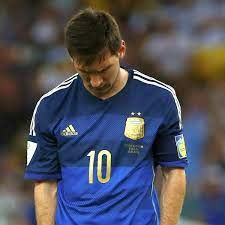
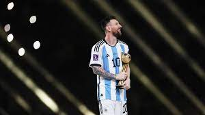

Leonel Andres Messi nacio y desde pequeño fue una persona destinada al exito mundial, pero no la tendria nada facil, nacio en una familia humilde de rosario en Argentina, su abuela fue quien lo metio en el mundo del futbol donde empezo con tan solo 4 años jugando con niños 6 años. A los 11 años detectaron que su cuerpo ya no producia la hormona del crecimiento lo cual seria un gran problema para convertirse en jugador profesional, el tratamiento era muy costoso y ningun clup queria financiarlo, por ello buscaron en el extranjero y el que estuvo dispuesto a ayudarlo fue el barcelona de españa. Seria un reto dificil dejar a tu país, a tus amigos, a tu familia, dejarlo todo por una oportunidad, pero messi lo sabia y estuvo dispuesto. El clup financio el tratamiento y messi alcanzo el metro con 69, lo cual era suficiente, debuto en el 2004 con tan solo 17 años y se convirtio en el jugador mas joven en debutar en el barca hasta ese momento, las primeras temporadas fueron muy dificiles, leciones poco tiempo de juego y no muy buen rendimiento pero todo seria diferente apartir de un partido amistoso contra la juve, messi seria el mejor tanto que la juve lo queria como prestamo, apartir de ese mometo messi seria el mejor, ganando 4 balones de oro seguidos 4 champions legue, muchas ligas e increibles estadisticas, pero no todo era bueno...
Mientras messi era el exito en su clup, en la seleccion nacional no era asi, al ver su potencial la seleccion española lo queria en sus filas, pero messi le era fiel a su patria, espero y espero hasta que final mente la seleccion lo llamo, por desgracia su debut no fue lo esperado y fue expulsado al poco tiempo de iniciar el partido, los años posterioeres no fueron los mejores, Argentina estuvo muy cerca de ganarlo todo pero siempre se quedaban a un partido a 90 minutos.... Todo empezo con los juegos olimpicos donde ganarian la medalla de plata pero ellos querian el oro, despues recibirian un golpe muy duro el mundial de 2014 contra Alemania, perdiendo 1-0, los medios empezaban a no confiar en el, depues perderian la final de la copa america del 2015 y un año despues la de 2016, ahi fue cuando los medios no era que no confiaran era que no lo querian, lo odiaban. Messi sentia tanta precion que simplemente renuncio a la seleccion, pero tuvo que volver para ayudar a la seleccion a llegar al mundial de 2018 donde caerian en octavos de final lo que solo empeoraria de las cosas. Pero ahora no solo tenia problemas en la seleccion tambien en el clup, el barcelona pasaba por un mal momento por temas de direccion y econimicos, messi se echo al equipo al hombro y logro que llegaran a semifinales de champions, iban contra el liverpool, en la ida ganaron con mucha ventaja peor en la vuelta jugaron un partido muy malo, el liverpool remonto y entaria la peor etapa de Messi y el barcelona, no ganarian nada relevante e incluso messi se tuvo que ir del clup, del clup de sus amores...
Todo era oscuro, pero habia una pequeña luz, la copa america de 2021, una seleccion renovada llena de esperanza y lo lograron, fue un camino dificil pero al final lo consiguieron 1-0 contra brasil Argentina ganaba la copa america, Messi conseguia su primer titulo oficial, y la esperanza para el mundial de 2022 empezaba a crecer, lo logran?, todo empezo en noviembre 2022, arabia sauidita vs Argentina, todos estaba con Argentina se esperaba la victoria, pero no fue asi, Argentina perdio y muchos perdieron la esperanza, como una candidata a ganar el mundial va a perder contra arabia? México tenia la posibilidad de eliminar a Argentina, pero no Messi no dejaria pasar su ultima oportunidad, su ultima bala, hizo una actuación formidable y no solo en ese partido, en todo el mundial, 18 de diciembre de 20222 final del mundial, tiempo extra, penal decisivo de montiel arquero:lloris, se acerca al arco, dispara y...... Gol. Argentina campeona del mundo, Messi campeon del mundo......
